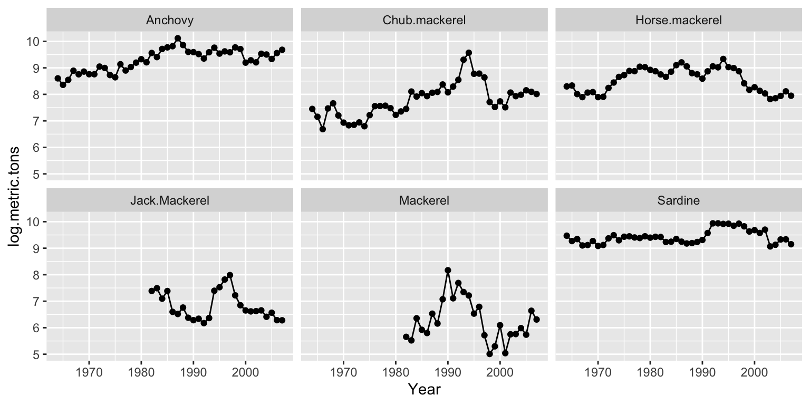

We will be modeling and forecasting catch data however you can use the techniques we will learn on any regularly spaced time data.

Your data should be in a simple csv (comma-separated) file with time (year, day, month, etc) and value:
Year, metric.tons
1964, 5449.2
1965, 4263.5
1966, 5146.4
1967, 7271.5
1968, 6352.5If you have different locations or species, add that as a new column.
Year, metric.tons, species
1964, 5449.2, Anchovy
1965, 4263.5, Anchovy
1966, 5146.4, Anchovy
1967, 7271.5, Anchovy
1968, 6352.5, Anchovy
1964, 5449.2, Sardine
1965, 4263.5, Sardine
1966, 5146.4, Sardine
1967, 7271.5, Sardine
1968, 6352.5, SardineHere is an example with species and location.
Year, metric.tons, species, region
1964, 5449.2, Anchovy, North
1965, 4263.5, Anchovy, North
1966, 5146.4, Anchovy, North
1967, 7271.5, Anchovy, North
1968, 6352.5, Anchovy, North
1964, 5449.2, Sardine, North
1965, 4263.5, Sardine, North
1966, 5146.4, Sardine, North
1967, 7271.5, Sardine, North
1968, 6352.5, Sardine, North
1964, 5449.2, Sardine, South
1965, 4263.5, Sardine, South
1966, 5146.4, Sardine, South
1967, 7271.5, Sardine, South
1968, 6352.5, Sardine, South